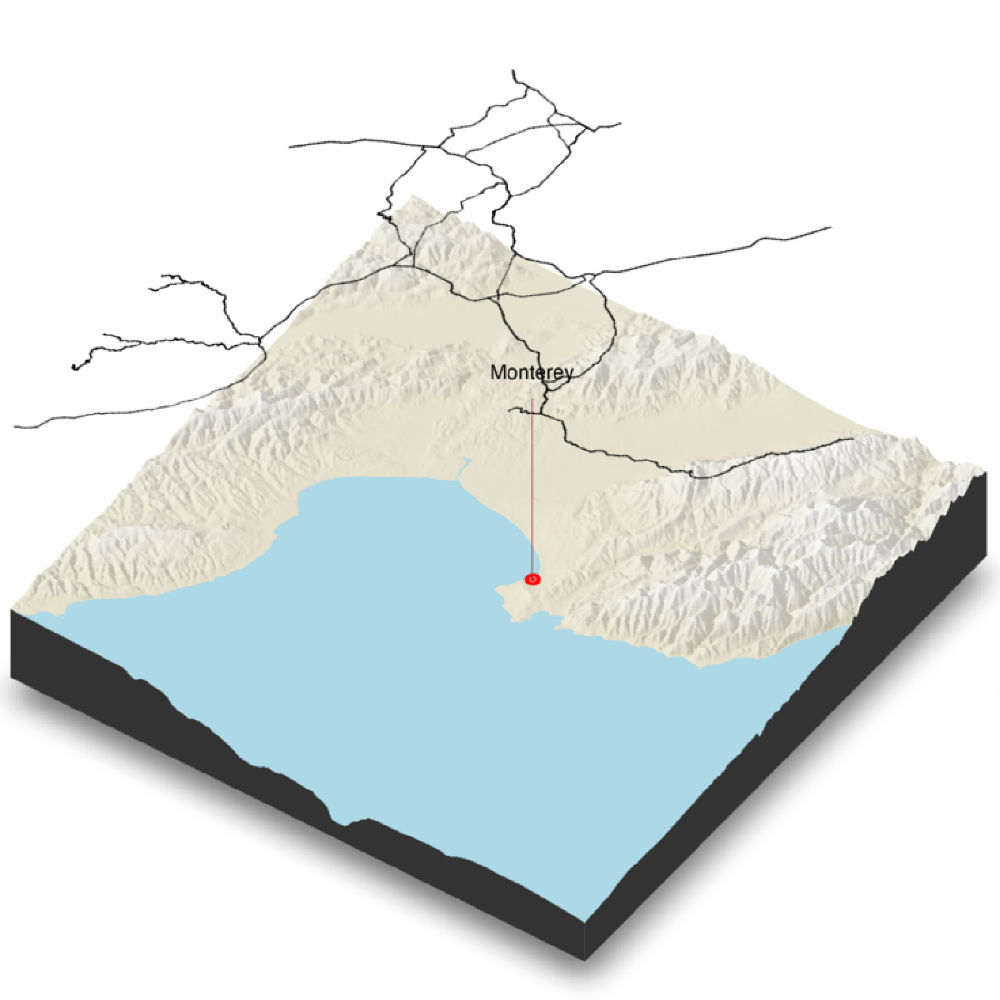

Render a 2D floating overlay over the map.
Note: Multiple layers with transparency can cause rendering issues in rgl.
render_floating_overlay(
overlay = NULL,
altitude = NULL,
heightmap = NULL,
zscale = 1,
alpha = 1,
baseshape = "rectangle",
remove_na = TRUE,
reorient = TRUE,
clear_layers = FALSE,
horizontal_offset = c(0, 0),
...
)Overlay (4D RGBA array) to be rendered on the 3D map.
Altitude to place the overlay.
The underlying surface. A two-dimensional matrix, where each entry in the matrix is the elevation at that point.
Default 1. The ratio between the x and y spacing (which are assumed to be equal) and the z axis. For example, if the elevation levels are in units
of 1 meter and the grid values are separated by 10 meters, zscale would be 10. Adjust the zscale down to exaggerate elevation features.
Default 1. Multiplies the layer's transparency by this factor. 0 is completely transparent.
Default rectangle. Shape of the overlay. Options are c("rectangle", "circle", "hex").
Default TRUE. Whether to make the overlay transparent above empty spaces (represented by NA values) in the underlying elevation matrix.
Default TRUE. Whether to reorient the image array to match the 3D plot.
Default FALSE. Clears all existing floating layers on the visualization.
Default c(0,0). Distance (in 3D space) to offset the floating offset in the x/y directions.
Additional arguments to pass to rgl::triangles3d().
Adds a 3D floating layer to the map. No return value.
if(run_documentation()) {
#Render the road network as a floating overlay layer, along with a label annotation and a floating
#point annotation
if(all(length(find.package("sf", quiet = TRUE)) > 0,
length(find.package("magick", quiet = TRUE)) > 0)) {
monterey = c(-121.892933,36.603053)
monterey_city = sf::st_sfc(sf::st_point(monterey))
#Generate Overlays
road_overlay = generate_line_overlay(monterey_roads_sf, attr(montereybay,"extent"),
heightmap = montereybay)
point_overlay = generate_point_overlay(monterey_city, color="red", size=12,
attr(montereybay,"extent"), heightmap = montereybay)
#Create 3D plot (water transparency set to 1 because multiple transparency layers can interfere)
montereybay |>
height_shade() |>
add_shadow(ray_shade(montereybay,zscale=50),0.3) |>
plot_3d(montereybay, water = T, wateralpha = 1, windowsize = 800, watercolor = "lightblue")
render_camera(theta=-55,phi=45,zoom=0.8)
#Render label
render_label(montereybay, lat = monterey[2], long = monterey[1], altitude = 9900,
extent = attr(montereybay, "extent"),
zscale = 50, text = "Monterey", textcolor = "black", linecolor="darkred")
#Render Floating Overlays
render_floating_overlay(road_overlay, altitude = 10000,zscale = 50)
render_floating_overlay(point_overlay, altitude = 100,zscale = 50)
render_snapshot()
}
}
#> `montereybay` dataset used with no zscale--setting `zscale=50`. For a realistic depiction, raise `zscale` to 200.
